Psicoterapia individual em Gestalt-terapia para quem está pronto para olhar pra dentro. Atendimento online.
Agendar sessão"Acordo já sem energia pra enfrentar o dia, e nem sei mais se isso é o normal."
"Sei que preciso de ajuda, mas tenho medo de abrir para alguém e não ser entendido de verdade."
"Tenho crises que passam, mas o peso nunca some de vez, ele só muda de forma."
"Às vezes me sinto tão isolado que parece que ninguém ao meu redor conseguiria entender o que estou passando."
O cansaço vai se tornando o estado padrão, não uma fase passageira.
As decisões que você sabe que são equivocadas continuam acontecendo, sem que você consiga entender por que.
O distanciamento das pessoas ao redor cresce, e cada vez fica mais difícil encontrar energia para reconectar.
Não precisa ser assim indefinidamente.
Querer melhorar é o começo. Mas as respostas emocionais que se formaram ao longo de anos precisam de um olhar mais cuidadoso e atento para serem compreendidos, não só de determinação.
O apoio de quem está próximo é importante. Mas ele não tem a escuta estruturada para ajudar você a entender o que está por trás do que você sente.
O que não é trabalhado agora não desaparece. Ele se manifesta de formas diferentes: no corpo, nas relações, nas decisões do dia a dia.
É o único processo que coloca você como protagonista da sua própria história, vendo o mundo a partir da sua ótica e com isso, entendendo de onde vem suas emoções, reações, aquilo que te move e os seus desejos mais verdadeiros.
Agendar sessãoO processo parte de como você percebe e sente as coisas no agora. Não existe um roteiro pré-definido, existe atenção ao que é real para você.
Com o tempo, você começa a perceber como você reage, o que ativa suas emoções e quais padrões aparecem nas suas relações e decisões.
A Gestalt-terapia trabalha com o que acontece na relação terapêutica também. A conexão com o terapeuta é parte do processo, não só o pano de fundo. O que torna fundamental a escolha de um bom profissional, que atua como espectador ativo do seu processo.
O objetivo não é criar dependência. É desenvolver sua capacidade de se entender e agir a partir do que você realmente quer.
O que acontece depois do contato?
Você entra em contato pelo WhatsApp e agenda a sessão de avaliação. Sem formulário longo, sem burocracia.
Na primeira sessão, a Larissa entende seu contexto, o que te trouxe até ali e o que você quer trabalhar. Você também tem espaço para tirar qualquer dúvida sobre o processo.
Frequência semanal. Sessões de até 50 minutos. Online via plataforma segura
Sem prazo fixo. O ritmo é construído junto, de acordo com a sua disponibilidade em seguir no trabalho conjunto.
Pelo Código de Ética do CFP. O que é dito no ambiente terapêutico fica no ambiente terapêutico.
Uma terapeuta que também está na sua jornada de saúde emocional, gerando uma conexão profunda com a sua história.
Incluindo pessoas LGBTQIA+, jovens em construção de identidade e quem cresceu fora dos padrões que o mundo tentou impor.
Sente um cansaço que não passa com descanso e não consegue entender de onde ele vem.
Vive crises de ansiedade ou momentos deprimidos que aparecem e somem, mas nunca desaparecem de vez.
Repete respostas emocionais nos relacionamentos que te machucam e não consegue sair desse ciclo.
Está em processo de entender sua identidade, suas escolhas e quem você quer ser a partir de agora.
Carrega dores que nunca foram ditas em voz alta para ninguém, e sente que precisa de um espaço real para isso.
Quer tomar decisões mais conscientes, a partir do que você de fato sente, não do que os outros esperam.
Garantia de
Risco Zero
Começamos com uma sessão de avaliação.
Você entende como funciona o processo, a Larissa entende o que te trouxe até aqui, e juntos decidimos se faz sentido seguir.
Sem compromisso de continuidade antes dessa conversa. AGENDAR MINHA SESSÃO O único compromisso no primeiro contato é aparecer.É uma sessão completa de 30 minutos. Você conta o que te trouxe até aqui, a Larissa explica como funciona o processo e tiramos todas as dúvidas. Sem compromisso de continuidade antes dessa conversa.
Apenas online.
Sim. O sigilo é garantido pelo Código de Ética do Conselho Federal de Psicologia. Nenhuma informação é compartilhada sem o seu consentimento.
A frequência é definida em conjunto, no início do processo, de acordo com o seu momento.
Não existe prazo fixo. O processo é construído no seu ritmo. Muitas pessoas começam a perceber diferença nas primeiras semanas, mas o tempo de acompanhamento depende do que você quer trabalhar.
Sim. O vínculo terapêutico é construído com base na sua liberdade de escolha. Não existe multa ou burocracia para encerrar.
Sim. O consultório é um espaço seguro e afirmativo para quem carrega questões de identidade, independente de orientação sexual ou expressão de gênero.